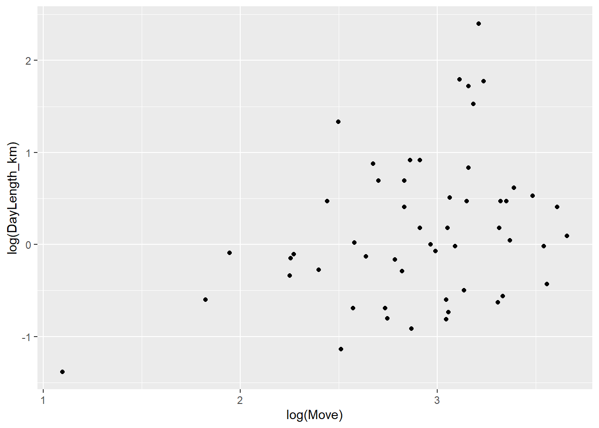
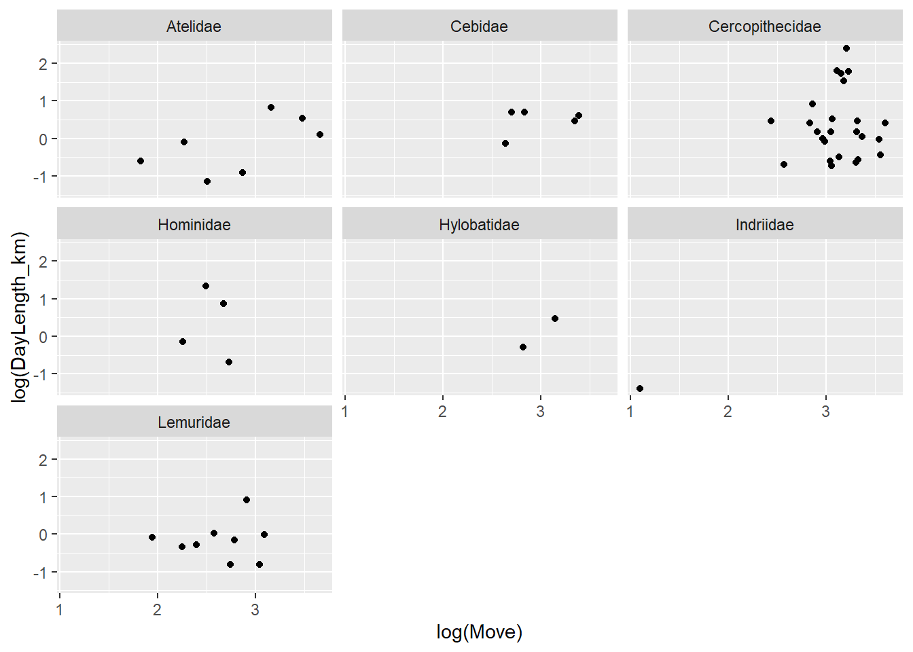
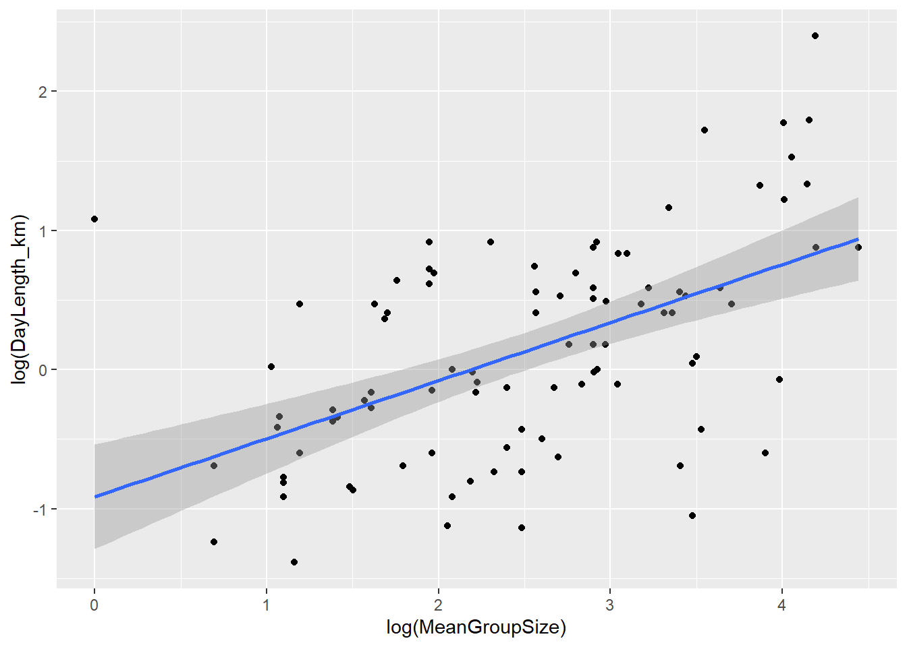

Scientific_Name Family Genus Species
35 Callithrix_geoffroyi Cebidae Callithrix geoffroyi
38 Callithrix_kuhlii Cebidae Callithrix kuhlii
213 Varecia_variegata Lemuridae Varecia variegata
20 Ateles_paniscus Atelidae Ateles paniscus
194 Saguinus_tripartitus Cebidae Saguinus tripartitus
111 Leontopithecus_chrysomelas Cebidae Leontopithecus chrysomelas
193 Saguinus_oedipus Cebidae Saguinus oedipus
88 Eulemur_rufus Lemuridae Eulemur rufus
39 Callithrix_penicillata Cebidae Callithrix penicillata
40 Callithrix_pygmaea Cebidae Callithrix pygmaea
Brain_Size_Species_Mean Body_mass_male_mean Body_mass_female_mean
35 NA NA NA
38 NA NA NA
213 32.12 3630.0 3520.0
20 103.85 8490.0 8070.0
194 NA NA NA
111 11.84 610.0 700.0
193 9.76 416.6 445.1
88 25.40 2170.0 2270.0
39 7.32 343.8 311.7
40 4.17 110.0 122.0
MeanGroupSize AdultMales AdultFemale GR_MidRangeLat_dd Precip_Mean_mm
35 5.00 2.0 1.00 NA NA
38 5.00 2.0 1.00 NA NA
213 2.80 2.5 1.42 -19.18 1885.8
20 18.20 4.0 2.30 2.06 1576.9
194 5.50 2.5 1.50 NA NA
111 6.70 1.6 1.00 -15.01 1531.2
193 5.80 2.7 1.70 9.22 1202.9
88 9.17 4.1 2.60 -19.51 1068.8
39 8.00 3.0 2.00 -12.68 1172.2
40 2.00 1.5 1.00 -5.96 2085.3
Temp_Mean_degC HomeRange_km2 DayLength_km Fruit Leaves Fauna
35 NA NA NA NA
38 NA NA NA NA
213 19.9 1.390 1.0210 90.0 6 0
20 25.6 1.360 2.4000 79.8 7.9 0.1
194 NA NA NA NA
111 22.4 0.240 NA NA
193 26.3 0.060 1.9000 NA 5 37
88 22.8 0.584 0.8475 68.4 24.1
39 22.0 0.010 1.0000 NA
40 25.6 0.002 0.2900 NA
Canine_Dimorphism Feed Move Rest Social BSD sex_ratio
35 NA NA NA NA 2.8 NA 2.000000
38 NA NA NA NA NA NA 2.000000
213 1.038 26.78 13.2 53.03 3.5 1.0312500 1.760563
20 1.567 NA NA NA 0.9 1.0520446 1.739130
194 NA NA NA NA NA NA 1.666667
111 NA NA NA NA 9.1 0.8714286 1.600000
193 1.000 NA NA NA NA 0.9359694 1.588235
88 NA 18.00 16.2 61.80 NA 0.9559471 1.576923
39 1.080 NA NA NA NA 1.1029836 1.500000
40 1.034 NA NA NA NA 0.9016393 1.500000
Creating a new variable named DI (Defensibility Index) in the dataframe
Defensibility Index: ratio of day range length to the diameter of the home range
#First I need to calculate my diameter using the formula to find the aread of a circle d$radius <-sqrt(d$HomeRange_km2/pi)d$diameter <- d$radius*2#Then to create the DI variable, I use the new diameter variable to input into the ratiod$DI <- d$DayLength_km/d$diameter#Adding DI variable to my dataframed <- d[order(d$DI, decreasing =TRUE), ]d[1:10, ]
Scientific_Name Family Genus Species
95 Galagoides_zanzibaricus Galagidae Galagoides zanzibaricus
196 Saimiri_oerstedii Cebidae Saimiri oerstedii
39 Callithrix_penicillata Cebidae Callithrix penicillata
200 Tarsius_bancanus Tarsiidae Tarsius bancanus
193 Saguinus_oedipus Cebidae Saguinus oedipus
40 Callithrix_pygmaea Cebidae Callithrix pygmaea
202 Tarsius_syrichta Tarsiidae Tarsius syrichta
37 Callithrix_jacchus Cebidae Callithrix jacchus
78 Daubentonia_madagascariensis Daubentonidae Daubentonia madagascariensis
180 Propithecus_verreauxi Indriidae Propithecus verreauxi
Brain_Size_Species_Mean Body_mass_male_mean Body_mass_female_mean
95 3.51 149.0 137.0
196 25.07 897.0 680.0
39 7.32 343.8 311.7
200 3.16 128.0 123.0
193 9.76 416.6 445.1
40 4.17 110.0 122.0
202 3.36 134.0 117.0
37 7.24 318.0 322.0
78 44.85 2620.0 2490.0
180 26.21 2930.0 2980.0
MeanGroupSize AdultMales AdultFemale GR_MidRangeLat_dd Precip_Mean_mm
95 NA NA NA -11.84 760.0
196 55.3 10.0 8.9 8.77 2280.0
39 8.0 3.0 2.0 -12.68 1172.2
200 NA NA NA 0.56 2563.9
193 5.8 2.7 1.7 9.22 1202.9
40 2.0 1.5 1.0 -5.96 2085.3
202 NA NA NA 9.07 1831.0
37 11.0 2.3 2.9 -6.58 993.9
78 1.0 1.0 1.0 -18.79 1491.3
180 5.0 1.7 2.8 -22.63 581.3
Temp_Mean_degC HomeRange_km2 DayLength_km Fruit Leaves Fauna
95 24.0 0.010 1.76 NA
196 26.6 0.100 3.40 NA 0 20
39 22.0 0.010 1.00 NA
200 24.7 0.040 1.80 NA
193 26.3 0.060 1.90 NA 5 37
40 25.6 0.002 0.29 NA
202 24.1 0.048 1.38 NA
37 25.0 0.020 0.88 22 0 11
78 21.7 0.356 2.95 NA
180 23.5 0.030 0.85 24 65 0
Canine_Dimorphism Feed Move Rest Social BSD sex_ratio radius
95 1.106 NA NA NA NA 1.0875912 NA 0.05641896
196 NA NA NA NA 13.9 1.3191176 1.1235955 0.17841241
39 1.080 NA NA NA NA 1.1029836 1.5000000 0.05641896
200 NA NA NA NA NA 1.0406504 NA 0.11283792
193 1.000 NA NA NA NA 0.9359694 1.5882353 0.13819766
40 1.034 NA NA NA NA 0.9016393 1.5000000 0.02523133
202 NA NA NA NA NA 1.1452991 NA 0.12360774
37 1.056 43 14 30 14.0 0.9875776 0.7931034 0.07978846
78 NA NA NA NA NA 1.0522088 1.0000000 0.33662786
180 1.061 NA NA NA 3.8 0.9832215 0.6071429 0.09772050
diameter DI
95 0.11283792 15.597594
196 0.35682482 9.528485
39 0.11283792 8.862269
200 0.22567583 7.976042
193 0.27639532 6.874212
40 0.05046265 5.746825
202 0.24721549 5.582174
37 0.15957691 5.514582
78 0.67325573 4.381693
180 0.19544100 4.349139
Plotting the relationship between day range length and group size
#Plotting the relationship OVERALL (pov = plotting overall)pov <- d %>%filter(Move >0, DayLength_km >0) %>%#forced to remove NAggplot(aes(x =log(Move), y =log(DayLength_km))) +geom_point()pov

#Plotting the relationship BY FAMILY (pbf = plotting by family)pbf <- d%>%filter(Move >0, DayLength_km >0) %>%#forced to remove NAggplot(aes(x =log(Move), y =log(DayLength_km))) +geom_point() +facet_wrap(~ Family)pbf

It appears, by qualitative assumptions, there is some correlation between movement time and travel distance across certain families. Overall examination reveals little direct observational correlation between movement time and travel distance.
Cercopithecidae seems to have correlation between high movement time and travel distance.
Data was transformmed through the log function to fix graphical skew
Plotting the relationship between day range length and group size
#Plotting the relationship OVERALL (pov = plotting overall )pov <- d %>%filter(MeanGroupSize >0, DayLength_km >0) %>%#forced to remove NAggplot(aes(x =log(MeanGroupSize), y =log(DayLength_km))) +geom_point() +geom_smooth(method ="lm", fullrange =FALSE, na.rm =TRUE)pov
`geom_smooth()` using formula = 'y ~ x'
#Plotting the relationship BY FAMILY (pbf = plotting by family)pbf <- d%>%filter(MeanGroupSize >0, DayLength_km >0) %>%#forced to remove NAggplot(aes(x =log(MeanGroupSize), y =log(DayLength_km))) +geom_point() +facet_wrap(~ Family) +geom_smooth(method ="lm", fullrange =FALSE, na.rm =TRUE)pbf
`geom_smooth()` using formula = 'y ~ x'
Warning in qt((1 - level)/2, df): NaNs produced
Warning in max(ids, na.rm = TRUE): no non-missing arguments to max; returning
-Inf
There appears to be a slight observational correlation between mean group size and travel distance, with a regression line added to note observation (I have a general dislike for qualitative correlation and felt the need to add this based off of Module 9 Bivariate Scatterplots Challenge 1 to give indication)
The correlation appears to be strongest in the Cercopithecidae and Cebidae families
Data was once again transformed through the log function to adjust for graphical skew
Plotting the relationship between canine size dimorphism and body size dimorphism overall and by family
#Plotting the relationship OVERALL (pov = plotting overall )pov <- d %>%filter(MeanGroupSize >0, DayLength_km >0) %>%#forced to remove NAggplot(aes(x =log(MeanGroupSize), y =log(DayLength_km))) +geom_point() +geom_smooth(method ="lm", fullrange =FALSE, na.rm =TRUE)pov
`geom_smooth()` using formula = 'y ~ x'

#Plotting the relationship BY FAMILY (pbf = plotting by family)pbf <- d%>%filter(MeanGroupSize >0, DayLength_km >0) %>%#forced to remove NAggplot(aes(x =log(MeanGroupSize), y =log(DayLength_km))) +geom_point() +facet_wrap(~ Family) +geom_smooth(method ="lm", fullrange =FALSE, na.rm =TRUE)pbf
`geom_smooth()` using formula = 'y ~ x'
Warning in qt((1 - level)/2, df): NaNs produced
Warning in max(ids, na.rm = TRUE): no non-missing arguments to max; returning
-Inf